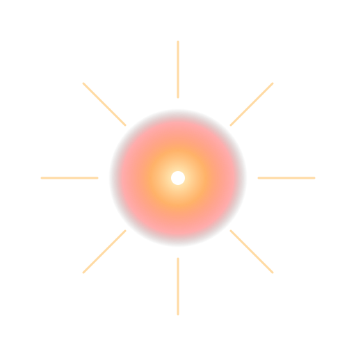
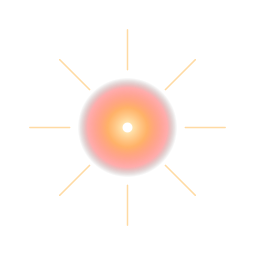

Big Bang
El Big Bang marca el origen del universo hace ~13.800 millones de años.
No fue una explosión en un punto, sino la expansión del espacio mismo.
Principales evidencias: radiación cósmica de fondo,
corrimiento al rojo de las galaxias (el universo se expande) y la
abundancia de elementos ligeros como hidrógeno y helio.
Tipos de galaxias
Las galaxias son enormes conjuntos de estrellas, gas, polvo y materia oscura.
Según su morfología se clasifican en:
- Espirales: con brazos curvados y núcleo central.
Ej.: Vía Láctea (espiral barrada).
- Elípticas: forma ovalada, poblaciones estelares antiguas y poca formación de estrellas.
- Irregulares: sin forma definida, a menudo producto de interacciones o colisiones galácticas.
En cada galaxia existen millones de sistemas estelares como el nuestro.
Ciclo estelar
Las estrellas nacen en nubes de gas y polvo llamadas nebulosas.
Al aumentar la densidad y temperatura, se encienden reacciones de fusión nuclear.
Su destino depende de la masa:
- Baja/mediana masa: gigante roja → nebulosa planetaria → enana blanca.
- Alta masa: supergigante → supernova → estrella de neutrones o agujero negro.
Este ciclo enriquece el cosmos con nuevos elementos químicos, base de planetas y vida.


 
